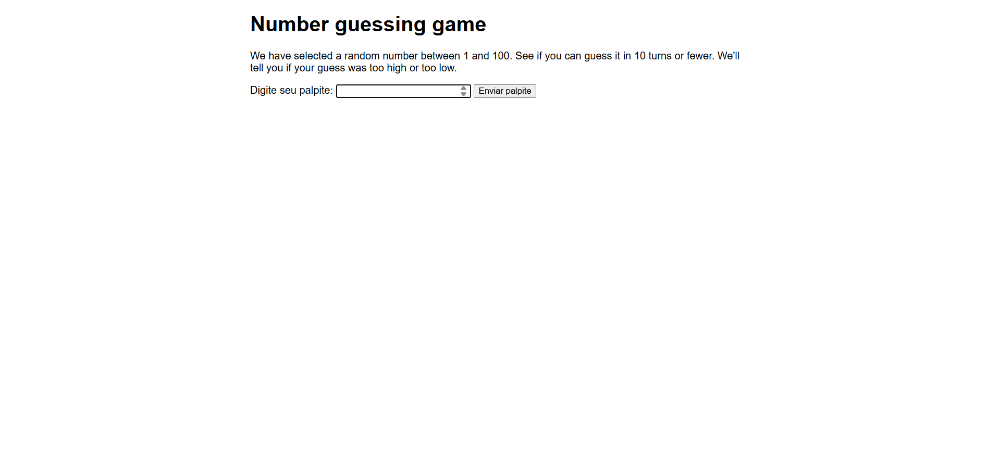
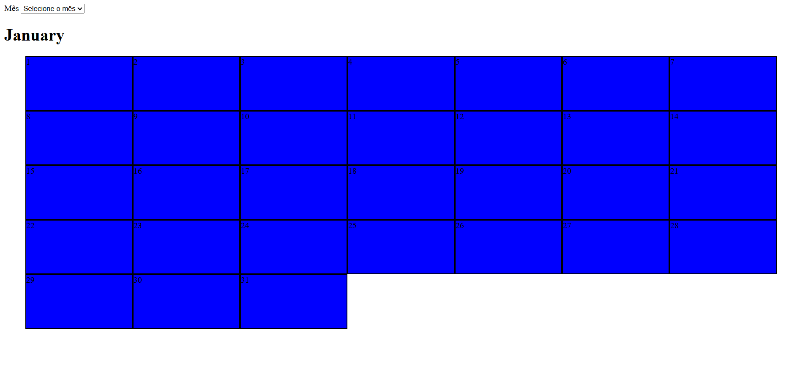

Primeiro proejto prático ustilizando apenas HTML e CSS puro. É uma Landing Page simulando uma venda de ingressos para o filme do Batman de 2022, contendo também o trailer do filme, mais uns cards dos personagens principais do longa.
Meus Projetos ↓↓


Um jogo de avinha, feito com HTML e JavaScript. Onde você vai ter que advinhar qual o número que foi gerado aleatóriamente pelo sistema, terá 10 chances e cada vez que você tentar advinhar, o resultado que colocou ficará amostra, dizendo se está perto do valor ou longe.

Primeiro projeto do curso ultilizando JavaScript puro, acompanhado de HTML e CSS. ultilizando de uma API para gerar as imagens e informações sobre os personagens de Star Wars, um projeto bem complexo e cheio de funcionlidades de funções, eventos e várias outras coisas que o JS proporciona para a realização de um site/sitema.

Outro projeot feito com JavaScript, mas agora simulando um calendário. Um projeot bem simples com poucas linhas de códigos.
.png)
Um projeto pouco parecido com o do calendário, mas com uma funcionlidade que altera a cor de fundo da página de acordo com a cor escolhida no seletor.
.png)
Aqui temos um gerador de histórias aleatótias, onde também é possível alterar o nome do invíduo da história, digitando um no input e sendo possível alterar a froma de medida da temperatura, escolhendo entre US e UK.
.png)
Este é o projeto mais complexo que fiz até agora, mais dos projetos práticos do curso, mas dessa vez, ultilizando React na parte do front-end e nodeJs na parte do back-end mais a ultiliação de um banco de dados local o MariaDB. Um projeto muito extenso utilizando hooks do react, tratamento de erros com toasty e verificações e muitas outras coisas.
×